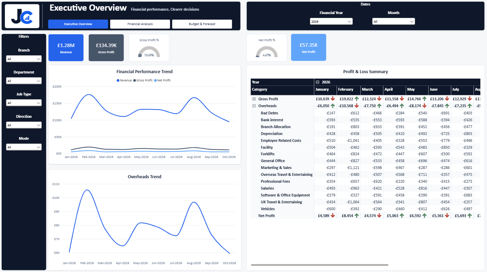

Executive Financial Dashboard
Revenue, profitability, budgets and forecasting for executive users.
Tools: Power BI, DAX, Data Modelling
Read Case StudyAnalytics, reporting and business intelligence solutions
Interactive reporting focused on business performance, analysis and decision-making

Revenue, profitability, budgets and forecasting for executive users.
Tools: Power BI, DAX, Data Modelling
Read Case Study
Transport activity, customer profitability, vehicle utilisation and carrier analysis.
Tools: Power BI, DAX, Star Schema
Read Case Study
Productivity, unutilised cost, absence and forward workforce capacity planning.
Tools: Power BI, DAX, Data Modelling
Read Case StudyProjects covering ingestion, transformation, modelling and reporting
An end-to-end analytics project covering ingestion, transformation, storage, semantic modelling and reporting.
Tools: Microsoft Fabric, Power BI, SQL, DAX
Read Case Study